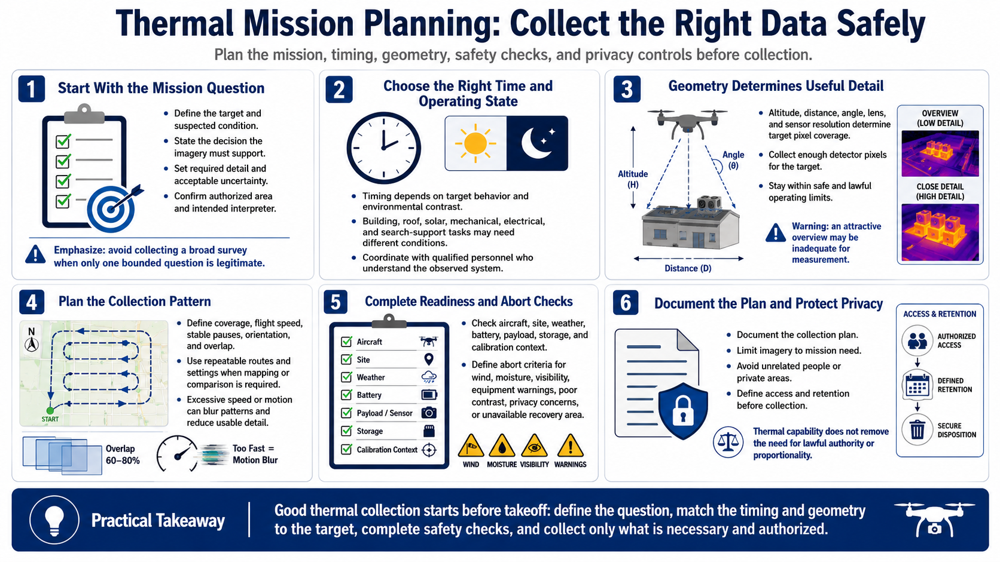

Planning Thermal Collection
Connecting to LMS... Progress: in progress

Narration
Begin with the mission objective and decision. Define the target, suspected condition, required detail, acceptable uncertainty, authorized area, and who will interpret the result. Avoid collecting a broad thermal survey when only one bounded question is legitimate.
Select timing based on target behavior and environmental contrast. Building, roof, solar, mechanical, electrical, and search-support tasks may need different operating states and times. Coordinate with qualified personnel who understand the system being observed.
Altitude, distance, angle, lens, and sensor resolution determine how many detector pixels cover the target. Keep within safe and lawful operating limits while collecting sufficient detail. An attractive overview may be inadequate for measurement.
Plan coverage, flight speed, stable pauses, orientation, and overlap when mapping or comparison is required. Use repeatable routes and settings where practical. Excessive speed or motion can blur patterns and reduce usable target detail.
Complete aircraft, site, weather, battery, payload, storage, and calibration-context checks. Define abort criteria for wind, moisture, visibility, equipment warnings, poor contrast, privacy concerns, or an unavailable recovery area.
Document the plan and protect privacy. Limit imagery to mission need, avoid unrelated people or private areas, and define access and retention before collection. Thermal capability does not reduce the need for lawful authority or proportionality.